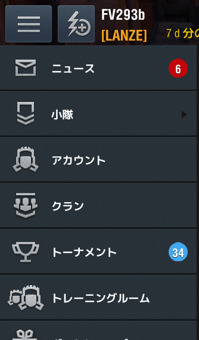

No notification
Creator
Name: FV293b
Twitter:
@FV29314b
Mod Information
ID: sys.ui.no_notification
Description: Hide notification on menu button. Caution: If you apply this mod, Clan invitation notification will be disabled.
